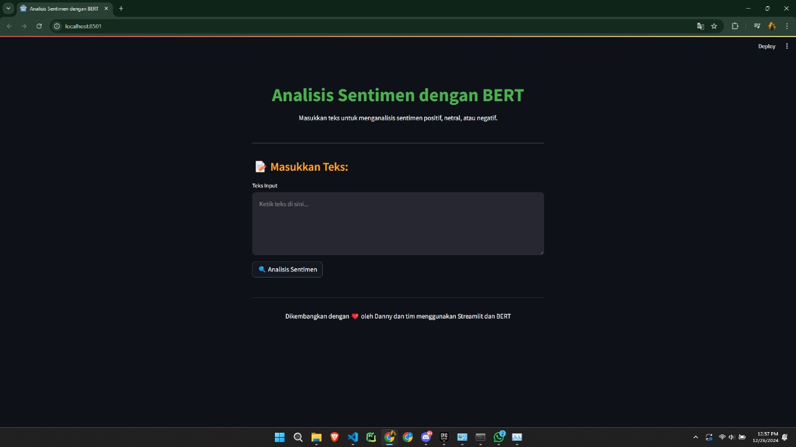

📊 Project Highlights
🧠 BCA Sentiment Analysis Using BERT
Description:
Conducted sentiment analysis on user opinions about BCA’s mortgage product (KPR) using social media data (Twitter/X).
A fine-tuned BERT model was used for contextual sentiment classification (positive, neutral, negative), along with analysis of sentiment trends and strategic recommendations for the marketing team.
Technologies used:
Python, Transformers, BERT, Pandas, Matplotlib, Seaborn
- Contextual text preprocessing
- Fine-tuned BERT model for Indonesian language
- Visualization of weekly sentiment patterns and topic categories
🌐 Network Traffic Classification Using Flow-Based Features
Description:
Classified types of network protocols (such as HTTPS, FTP, SSH) based on flow-based features using supervised learning techniques.
This project was conducted in the context of cybersecurity and network monitoring.
Technologies used:
Python, Scikit-learn, Pandas, XGBoost, Random Forest
- Explored features such as byte rate, packet count, and flag ratios
- High classification accuracy (≥85%)
- Feature importance analysis to identify dominant protocol indicators
🚀 In Progress & Upcoming
- Interactive visualization for BCA Sentiment Analysis using Plotly & Dash
- Real-time traffic classification system implementation based on socket log